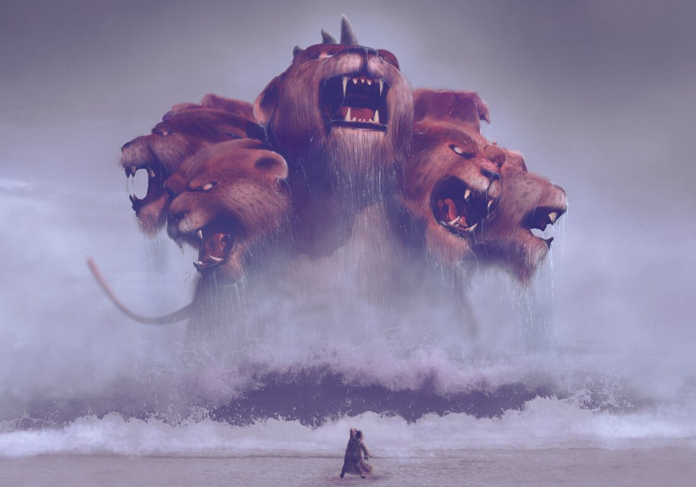

Когда-то наступит время, в которое на землю изольётся ярость Бога и ярость Сатаны..
.. И видел я иного Ангела, восходящего от востока солнца и имеющего печать Бога живого. И воскликнул он громким голосом к четырем Ангелам, которым дано вредить земле и морю, говоря: не делайте вреда ни земле, ни морю, ни деревам, доколе не положим печати на челах рабов Бога нашего.
.. И из дыма вышла саранча на землю, и дана была ей власть, какую имеют земные скорпионы. И сказано было ей, чтобы не делала вреда траве земной, и никакой зелени, и никакому дереву, а только одним людям, которые не имеют печати Божией на челах своих. И дано ей не убивать их, а только мучить пять месяцев; и мучение от нее подобно мучению от скорпиона, когда ужалит человека.
Изучая вопрос "начертания зверя" обнаруживается удивительное сходство к подходу идентификации своих людей как Зверем, так и Богом. Сатана отправляет своего Зверя ставить печать на челах у своих рабов именно после того как подобное уже сделал Ангел посланный Богом.
Печать зверя обозначена в греческом тексте словом χάραγμα - харАгма, в отличие от печати Бога σφραγῖδα - сфрагида.
Первое имеет несколько значений:
Второе подобно первому:
В книге Иова есть фрагмент, в котором упоминается печать на руке:
На руку каждого кладет Он печать – дабы все люди Его деянья познали
На руке раба имелся в древности знак (печать) его хозяина. Ср.: Положи меня печатью на сердце свое, печатью на руку свою, ибо могуча, как смерть, любовь, тяжела, как преисподняя, ревность (Песнь песней 8:6).
| N | ссылка | фрагмент | оригинал | произношение |
|---|---|---|---|---|
| 1 | Откр.13:16 | И он сделает то, что всем, малым и великим, богатым и нищим, свободным и рабам, положено будет начертание на правую руку их или на чело их | χάραγμα | хАрагма |
| 2 | Откр.13:17 | и что никому нельзя будет ни покупать, ни продавать, кроме того, кто имеет это начертание, или имя зверя, или число имени его | χάραγμα | хАрагма |
| 3 | Откр.14:9-10 | И третий Ангел последовал за ними, говоря громким голосом: кто поклоняется зверю и образу его и принимает начертание на чело свое, или на руку свою, тот будет пить вино ярости Божией, вино цельное, приготовленное в чаше гнева Его, и будет мучим в огне и сере пред святыми Ангелами и пред Агнцем | χάραγμα | хАрагма |
| 4 | Откр.14:11 | и дым мучения их будет восходить во веки веков, и не будут иметь покоя ни днем, ни ночью поклоняющиеся зверю и образу его и принимающие начертание имени его | χάραγμα | хАрагма |
| 5 | Откр.16:2 | Пошел первый Ангел и вылил чашу свою на землю: и сделались жестокие и отвратительные гнойные раны на людях, имеющих начертание зверя и поклоняющихся образу его | χάραγμα | хАрагма |
| 6 | Откр.19:20 | И схвачен был зверь и с ним лжепророк, производивший чудеса пред ним, которыми он обольстил принявших начертание зверя и поклоняющихся его изображению: оба живые брошены в озеро огненное, горящее серою | χάραγμα | хАрагма |
| 7 | Откр.20:4 | И увидел я престолы и сидящих на них, которым дано было судить, и души обезглавленных за свидетельство Иисуса и за слово Божие, которые не поклонились зверю, ни образу его, и не приняли начертания на чело свое и на руку свою. Они ожили и царствовали со Христом тысячу лет | χάραγμα | хАрагма |
В следующей таблице будут собраны различные комментарии.
| N | ссылка | комментарий | источники | критика |
|---|---|---|---|---|
| 1 | empty | |||
| 2 | ||||
| 3 | ||||
| 4 | ||||
| 5 | ||||
| 6 | ||||
| 7 | ||||
| 8 | ||||
| 9 | ||||
| 10 | ||||
| 11 | ||||
| 12 | ||||
| 13 | ||||
| 14 | ||||
| 15 | ||||
| 16 | ||||
| 17 | ||||
| 18 | ||||
| 19 | ||||
| 20 | ||||
| 21 | ||||
| 22 | ||||
| 23 | ||||
| 24 | ||||
| 25 | ||||
| 26 | ||||
| 27 | ||||
| 28 | ||||
| 29 | ||||
| 30 | ||||
| 31 | ||||
| 32 | ||||
| 33 | ||||
| 34 |